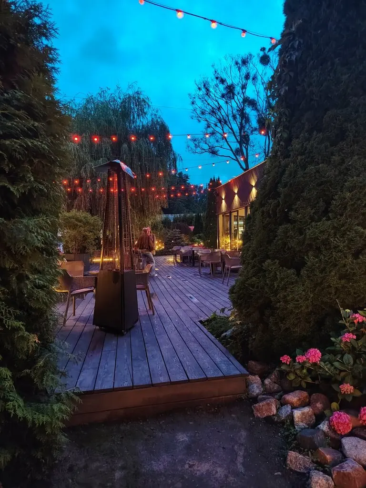
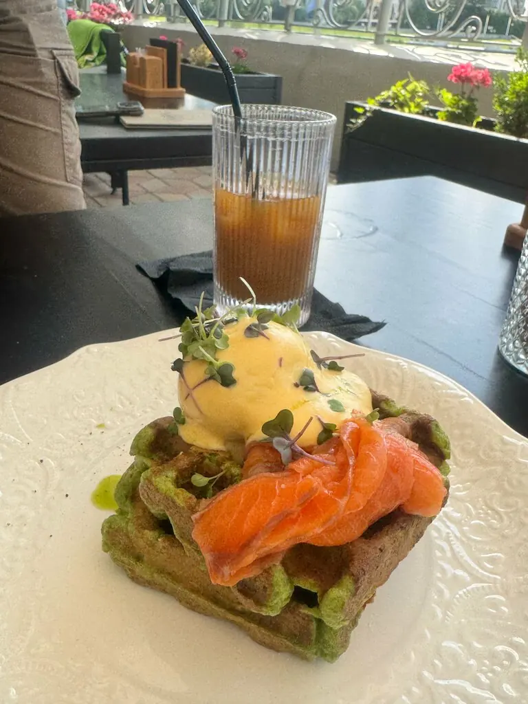
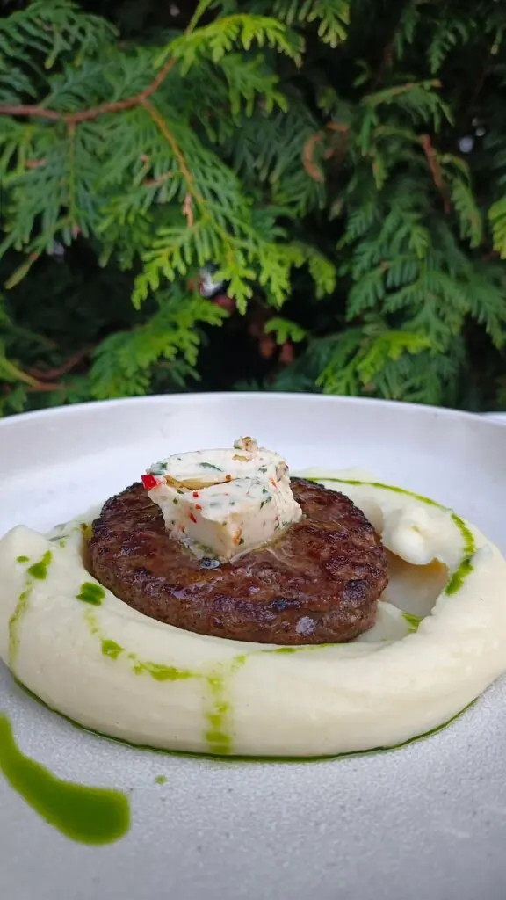
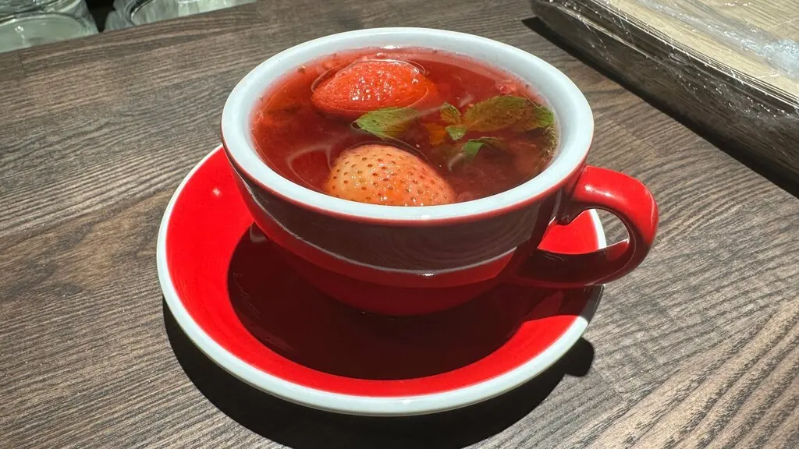
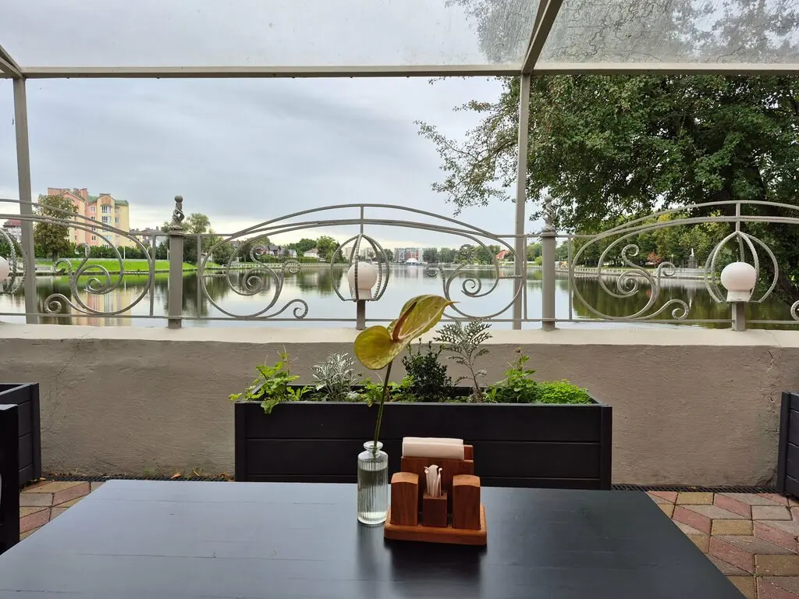

Душевный сад
Деревянная веранда среди роз и ив у Верхнего озера. Здесь всё медленно, вкусно и по-настоящему спокойно.
4,7 · 670 оценок

Что растёт на тарелках

Большой завтрак
550 ₽
Бифштекс с пюре
790 ₽
Холодный борщ
450 ₽Весь сад
Утром
Овсянка с пряной грушей380 ₽
Драники с рваной говядиной550 ₽
Зелёная гречка со шпинатом380 ₽
Рыба
Балтийская уха из трёх рыб790 ₽
Котлеты из судака с горошком750 ₽
Филе трески с киноа1 100 ₽
Мясо
Филе-миньон с картофелем конфи1 450 ₽
Скерт-стейк с перечной гречей1 100 ₽
Котлета в киевском стиле750 ₽
Сладкое
Вишнёвый пирог450 ₽
Медовик420 ₽
Тирамису350 ₽
Часть меню с Яндекс Карт, цены уточняйте у официанта.

Озеро и тишина
Всего 34 места. На веранде можно посидеть с собакой или с ноутбуком: утром здесь пьют кофе, а вечером зажигают гирлянды.
Гости
Очень приятный сервис, красивый вид, вкусная кухня. Веранда просто супер.Гоша Рубчинский
Душевно поужинать в этом ресторане вполне возможно.Владимир Талевич
Вкусная еда, обслуживание на высоте. Рекомендую.Наталья Блажеева